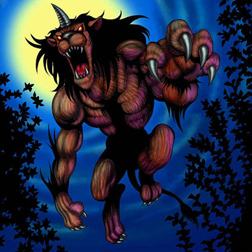

Gazelle the King of Mythical Beasts

STATS
ATK: 1500
DEF: 1200
DECK COST
Deck Cost per Card: 27
Fusion List (1 Possible Fusions)
Gazelle the King of Mythical Beasts + Mechanical Spider = Dice Armadillo